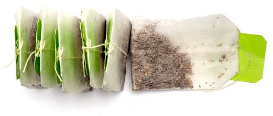
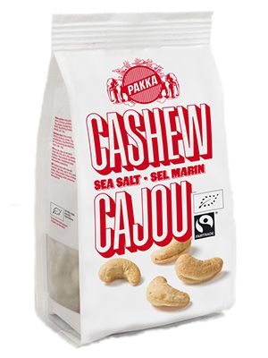

Südafrika und Chile - beide Länder genießen international höchstes Ansehen bei der Weinerzeugung und blicken auf eine langjährige Weintradition zurück. Wir von Fair Einkaufen wählen unter diesen Spitzenweine diejenigen aus, die sich zusätzlich durch faire Arbeitsbedingungen auszeichnen.
Dadurch besitzen diese Weine ausnahmslos zwei Eigenschaften,
die uns ganz wichtig sind - bio und fair in der Herstellung, und außergewöhnlich im Geschmack.
Fairtrade Tee
Ob aus Darjeeling, Assam, Dooars, Kerala, dem Hochland von Sri Lanka, oder aus dem Norden Vietnams.
Ob würzig, blumig, kräftig oder duftend: Die Welt des fair gehandelten Tees ist vielfältig wie die Menschen, die ihn anbauen.
Der Großteil der Zutaten stammen von Kleinbauern-Genossen-schaften aus Sri Lanka, Indien und Südostasien. Die Anbaumethoden sind nachhaltig, umweltverträglich und Bio-zertifiziert. Der faire Preis für die Kleinbauern liegt auf dem doppelten bis vierfachen Niveau des Weltmarktpreises.
Diese Teesorten vereinen Fairen Handel, Nachhaltigkeit und fairen Genuss in Perfektion!
 Fairtrade Tee
Fairtrade Saft
Fairtrade Saft stammt von zertifizierten Produzentengruppen, die ihre Früchte an große Safthersteller weiterverkaufen oder von diesen im Lohnauftrag verarbeiten lassen. Kaum eine dieser Produzentengruppen besitzt die Möglichkeit, ihren eigenen Saft zu produzieren, da dies hohe Investitionen in Maschinen und Know-how der Lebensmittelindustrie, Technik und Qualität bedeutet. Die Saftkonzentrathersteller im Süden vermischen Fairtrade- und Nicht-Fairtrade-Früchte, da der Anteil der Fairtrade Früchte zu gering ist, und die Kosten für eine getrennte Verarbeitung zu hoch wären.
 Fairtrade Snack
Fairtrade Snacks
rleben Sie Knabberspaß aus Fairem Handel. Dabei finden Sie leckere Kuchen und knackige Nüsse der besonderen Art. Anbau, Ernte und Röstung der fairen Zutaten erfolgt ausschließlich in Handarbeit, womit lediglich die besten Nüsse in die Verpackung gelangen. Wie all Spezialitäten stammen auch diese aus rein biologischem Anbau und sind ausnahmslos fair gehandelt. Herkunftsländer dieser Knabber-Snacks sind diesmal die Elfenbeinküste,
Palästina und die chinesische Provinz Shandong. Auch bei diesen Snacks gilt die Empfehlung "Reinbeißen und genießen".